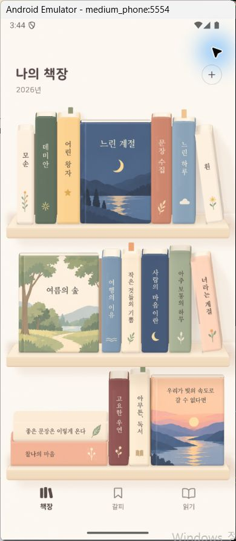

책 모서리 · 중복된 명암 띠 정리
재질에 남아 있던 가장자리 명암과 고정된 제본 선을 정리했습니다. 하나의 연속적인 표면 명암이 책의 회전·공통 광원·카메라 방향을 함께 사용합니다. 책의 배치와 선반·벽·책에 드리우는 3D 그림자 계산은 유지됩니다.
원본 시안수정 전 · 겹친 명암 띠수정 후 · 연속 명암
홈 기본 시점 4.5°에서 촬영한 실제 Android 화면입니다. 모서리는 연속 법선으로 표현하는 셰이딩이며, 충돌과 그림자의 형상은 기존 상자 모델을 사용합니다.
기본 카메라 4.5°카메라 8° 확인